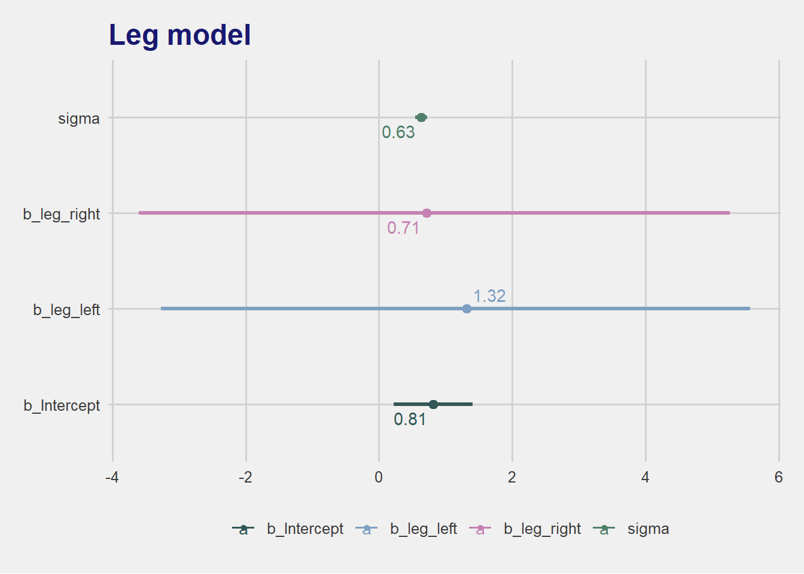

n <- 100
set.seed(6)
d <-
tibble(height = rnorm(n, mean = 10, sd = 2),
leg_prop = runif(n, min = 0.4, max = 0.5)) |>
mutate(leg_left = leg_prop * height + rnorm(n, mean = 0, sd = 0.02),
leg_right = leg_prop * height + rnorm(n, mean = 0, sd = 0.02))6 Structural Causal Models
This is a ver y important point, in the intro to chapter 6.
Regression will not srt it out. Regression is indeed an oracle, but a cruel one. It speaks in riddle and delights in punishing us for asking bad questions. The selection-distortion effect can happen inside of a multiple regression, becase the fact of adding a predictor induces statistical selection within the model, a phenomenon that goes by the unhelpful name of collider bias. This can mislead us into believing, for axample, that there is a negative associaiton between newswothiness and trustworthiness in general, ehen in fact it is just a consequence of conditioning on some variable.
6.1 Multicollinearity
Multicollinearity means a very strong association between 2 or more predictor variables.
6.1.1 Multicollinear legs
Create the data
which has the following correlations
GGally::ggcorr(d[, c("leg_left", "leg_right")],
color = "darkgreen", nbreaks = 10, label = TRUE,
label_round = 4, label_color = "midnightblue", direction = -1) +
theme(legend.position = "none") +
labs(title = "Correlations between parameters")Registered S3 method overwritten by 'GGally':
method from
+.gg ggplot2Warning: Ignoring unknown parameters: direction
tictoc::tic(msg = sprintf("run time of %s, use the cache.", "110 secs."))
b6.1 <- xfun::cache_rds({brm(data = d,
family = gaussian,
height ~ 1 + leg_left + leg_right,
prior = c(prior(normal(10, 100), class = Intercept),
prior(normal(2, 10), class = b),
prior(exponential(1), class = sigma)),
iter = 2000, warmup = 1000, chains = 4, cores = detectCores(),
seed = 6)},
file = "ch06_b06_01")
tictoc::toc()run time of 110 secs., use the cache.: 0.15 sec elapsedsummary(b6.1) Family: gaussian
Links: mu = identity; sigma = identity
Formula: height ~ 1 + leg_left + leg_right
Data: d (Number of observations: 100)
Draws: 4 chains, each with iter = 2000; warmup = 1000; thin = 1;
total post-warmup draws = 4000
Population-Level Effects:
Estimate Est.Error l-95% CI u-95% CI Rhat Bulk_ESS Tail_ESS
Intercept 0.81 0.30 0.21 1.40 1.00 4054 2945
leg_left 1.32 2.21 -3.17 5.73 1.00 1269 1478
leg_right 0.71 2.22 -3.71 5.23 1.00 1268 1483
Family Specific Parameters:
Estimate Est.Error l-95% CI u-95% CI Rhat Bulk_ESS Tail_ESS
sigma 0.63 0.05 0.55 0.73 1.00 2265 2249
Draws were sampled using sampling(NUTS). For each parameter, Bulk_ESS
and Tail_ESS are effective sample size measures, and Rhat is the potential
scale reduction factor on split chains (at convergence, Rhat = 1).tidybayes::get_variables(b6.1) [1] "b_Intercept" "b_leg_left" "b_leg_right" "sigma"
[5] "lprior" "lp__" "accept_stat__" "stepsize__"
[9] "treedepth__" "n_leapfrog__" "divergent__" "energy__" tidybayes::gather_draws(b6.1, b_Intercept, b_leg_left, b_leg_right, sigma) |>
mean_hdi(.width = 0.95) |>
ggplot(aes(x = .value, xmin = .lower, xmax = .upper, y = .variable, color = .variable)) +
geom_pointinterval() +
ggrepel::geom_text_repel(aes(label = round(.value, 2))) +
scale_color_paletteer_d("Manu::Kereru") +
ggthemes::theme_few() +
theme(title = element_text(color = "midnightblue"),
legend.position = "none",
panel.border = element_blank()) +
labs(title = "Leg model",
x = "value", y = NULL)
6.1.2 Multicollinear milk
data(milk)
d <- milk
d <- d |>
mutate(K = as.vector(scale(kcal.per.g)),
`F` = as.vector(scale(perc.fat)),
L = as.vector(scale(perc.lactose)))GGally::ggscatmat(d, columns = c("K", "F", "L")) +
# scale_color_paletteer_d(palette = "Manu::Kereru") +
theme_minimal()
# k regressed on f
tictoc::tic(msg = sprintf("run time of %s, use the cache.", "70 secs."))
b6.3 <- xfun::cache_rds({brm(data = d,
family = gaussian,
K ~ 1 + `F`,
prior = c(prior(normal(0, 0.2), class = Intercept),
prior(normal(0, 0.5), class = b),
prior(exponential(1), class = sigma)),
iter = 2000, warmup = 1000, chains = 4, cores = detectCores(),
seed = 6)},
file = "ch06_b06_03")
tictoc::toc()run time of 70 secs., use the cache.: 0.18 sec elapsed# k regressed on l
tictoc::tic(msg = sprintf("run time of %s, use the cache.", "10 secs."))
b6.4 <- xfun::cache_rds({update(b6.3,
newdata = d,
formula = K ~ 1 + L, seed = 6)},
file = "ch06_b06_04")
tictoc::toc()run time of 10 secs., use the cache.: 0.11 sec elapsedand the coefficients are
posterior_summary(b6.3) |> round(digits = 2) Estimate Est.Error Q2.5 Q97.5
b_Intercept 0.00 0.08 -0.17 0.17
b_F 0.86 0.09 0.67 1.03
sigma 0.49 0.07 0.37 0.64
lprior -1.59 0.34 -2.31 -1.01
lp__ -22.09 1.28 -25.37 -20.64posterior_summary(b6.4) |> round(digits = 2) Estimate Est.Error Q2.5 Q97.5
b_Intercept 0.00 0.07 -0.14 0.14
b_L -0.90 0.08 -1.06 -0.75
sigma 0.41 0.06 0.32 0.55
lprior -1.65 0.30 -2.30 -1.12
lp__ -17.38 1.25 -20.63 -15.91and the multivariate which shows that each variable has now a much larger variance caused by the colinearity.
tictoc::tic(msg = sprintf("run time of %s, use the cache.", "70 secs."))
b6.5 <- xfun::cache_rds({brm(data = d,
family = gaussian,
K ~ 1 + `F` + L,
prior = c(prior(normal(0, 0.2), class = Intercept),
prior(normal(0, 0.5), class = b),
prior(exponential(1), class = sigma)),
iter = 2000, warmup = 1000, chains = 4, cores = detectCores(),
seed = 6)},
file = "ch06_b06_05")
tictoc::toc()run time of 70 secs., use the cache.: 0.17 sec elapsedposterior_summary(b6.5) |> round(digits = 2) Estimate Est.Error Q2.5 Q97.5
b_Intercept 0.00 0.07 -0.15 0.14
b_F 0.25 0.20 -0.13 0.66
b_L -0.67 0.20 -1.05 -0.27
sigma 0.41 0.06 0.32 0.55
lprior -1.42 0.42 -2.50 -0.88
lp__ -17.28 1.50 -20.89 -15.426.2 Post-treatment bias
# how many plants would you like?
n <- 100
set.seed(7)
d <-
tibble(h0 = rnorm(n, mean = 10, sd = 2),
treatment = rep(0:1, each = n / 2),
fungus = rbinom(n, size = 1, prob = .5 - treatment * 0.4),
h1 = h0 + rnorm(n, mean = 5 - 3 * fungus, sd = 1))
skimr::skim(d)| Name | d |
| Number of rows | 100 |
| Number of columns | 4 |
| _______________________ | |
| Column type frequency: | |
| numeric | 4 |
| ________________________ | |
| Group variables | None |
Variable type: numeric
| skim_variable | n_missing | complete_rate | mean | sd | p0 | p25 | p50 | p75 | p100 | hist |
|---|---|---|---|---|---|---|---|---|---|---|
| h0 | 0 | 1 | 10.28 | 1.92 | 6.43 | 8.88 | 10.21 | 11.44 | 15.43 | ▃▇▇▃▂ |
| treatment | 0 | 1 | 0.50 | 0.50 | 0.00 | 0.00 | 0.50 | 1.00 | 1.00 | ▇▁▁▁▇ |
| fungus | 0 | 1 | 0.30 | 0.46 | 0.00 | 0.00 | 0.00 | 1.00 | 1.00 | ▇▁▁▁▃ |
| h1 | 0 | 1 | 14.38 | 2.41 | 7.93 | 13.12 | 14.69 | 15.87 | 20.53 | ▁▃▇▇▁ |
6.2.1 A prior is born
If we center our prior for \(p\) on 1, that implies an expectation of no change in height. That is less than we know. But we would allow \(p\) to be less than 1, in case the experiment ges wrong. We also want to ensure \(p>0\).
Therefore we use \(p\) with log-normal distribution
\[ \begin{align*} h_{1,i} &\sim \mathcal{N}(\mu_i, \sigma) \\ \mu_i &= h_{0,i} \times p \\ p &\sim \mathcal{LogNormal}(0, 0.25) \\ \sigma &\sim \mathcal{Exp}(1) \end{align*} \]
tictoc::tic(msg = sprintf("run time of %s, use the cache.", "70 secs."))
b6.6 <- xfun::cache_rds({
out <- brm(
data = d,
family = gaussian,
h1 ~ 0 + h0,
prior = c(prior(lognormal(0, 0.25), class = b, lb = 0),
prior(exponential(1), class = sigma)),
iter = 2000, warmup = 1000, chains = 4, cores = detectCores(),
seed = 6)
out <- brms::add_criterion(out, criterion = c("waic", "loo"))
out
},
file = "ch06_b06_06")
tictoc::toc()run time of 70 secs., use the cache.: 0.18 sec elapsedbrms::posterior_summary(b6.6) Estimate Est.Error Q2.5 Q97.5
b_h0 1.383651 0.01654117 1.351387 1.415997
sigma 1.742914 0.12775331 1.508492 2.006601
lprior -2.444556 0.14628704 -2.760598 -2.184604
lp__ -199.131304 0.98776814 -201.919589 -198.132103So the increase is 1.38 relative to \(h_0\).
Now including the treatment and fungus we have
\[ \begin{align*} h_{1,i} &\sim \mathcal{N}(\mu_i, \sigma) \\ \mu_i &= h_{0,i} \times p \\ p &\sim \alpha + \beta_1 treatment_i + \beta_2 fungus_i \\ \alpha &\sim \mathcal{LogNormal}(0, 0.25) \\ \beta_1 &\sim \mathcal{N}(0, 0.5) \\ \beta_2 &\sim \mathcal{N}(0, 0.5) \\ \sigma &\sim \mathcal{Exp}(1) \end{align*} \]
tictoc::tic(msg = sprintf("run time of %s, use the cache.", "80 secs."))
b6.7 <- xfun::cache_rds({
out <- brm(
data = d,
family = gaussian,
bf(h1 ~ h0 * (a + t * treatment + f * fungus),
a + t + f ~ 1,
nl = TRUE),
prior = c(prior(lognormal(0, 0.2), nlpar = a, lb = 0),
prior(normal(0, 0.5), nlpar = t),
prior(normal(0, 0.5), nlpar = f),
prior(exponential(1), class = sigma)),
iter = 2000, warmup = 1000, chains = 4, cores = detectCores(),
seed = 6)
out <- brms::add_criterion(out, criterion = c("waic", "loo"))},
file = "ch06_b06_07")
tictoc::toc()run time of 80 secs., use the cache.: 0.17 sec elapsedbrms::posterior_summary(b6.7) Estimate Est.Error Q2.5 Q97.5
b_a_Intercept 1.42326211 0.02424137 1.37512847 1.4694897
b_t_Intercept 0.04446936 0.02957687 -0.01249662 0.1044173
b_f_Intercept -0.20371935 0.03277750 -0.26847845 -0.1413819
sigma 1.33384353 0.09512225 1.15778260 1.5330524
lprior -3.09812524 0.20213247 -3.51192788 -2.7164356
lp__ -173.07112190 1.39597643 -176.64959452 -171.3354407Now the effect of the treatment is almost non existent.
6.2.2 Blocked by consequence
The problem is that the fungus is part of a chain between the treatment and the growth.
dag_coord <- data.frame(
name = c("h0", "h1", "F", "T"),
x = c(1, 2, 3, 4),
y = c(1, 1, 1, 1)
)
dag <- ggdag::dagify(h1 ~ h0, h1 ~ `F`, `F` ~ `T`,
coords = dag_coord) |>
ggdag::ggdag(node_size = 8, text_col = "yellow") +
ggthemes::theme_solid(fill = "snow2")
dag
so now we redo the model but without the fungus effect.
\[ \begin{align*} h_{1,i} &\sim \mathcal{N}(\mu_i, \sigma) \\ \mu_i &= h_{0,i} \times p \\ p &\sim \alpha + \beta_1 treatment_i \\ \alpha &\sim \mathcal{LogNormal}(0, 0.25) \\ \beta_1 &\sim \mathcal{N}(0, 0.5) \\ \sigma &\sim \mathcal{Exp}(1) \end{align*} \]
tictoc::tic(msg = sprintf("run time of %s, use the cache.", "80 secs."))
b6.8 <- xfun::cache_rds({
out <- brm(
data = d,
family = gaussian,
bf(h1 ~ h0 * (a + t * treatment),
a + t ~ 1, nl = TRUE),
prior = c(prior(lognormal(0, 0.2), nlpar = a, lb = 0),
prior(normal(0, 0.5), nlpar = t),
prior(exponential(1), class = sigma)),
iter = 2000, warmup = 1000, chains = 4, cores = detectCores(),
seed = 6)
out <- brms::add_criterion(out, criterion = c("waic", "loo"))},
file = "ch06_b06_08")
tictoc::toc()run time of 80 secs., use the cache.: 0.18 sec elapsedsummary(b6.8) Family: gaussian
Links: mu = identity; sigma = identity
Formula: h1 ~ h0 * (a + t * treatment)
a ~ 1
t ~ 1
Data: d (Number of observations: 100)
Draws: 4 chains, each with iter = 2000; warmup = 1000; thin = 1;
total post-warmup draws = 4000
Population-Level Effects:
Estimate Est.Error l-95% CI u-95% CI Rhat Bulk_ESS Tail_ESS
a_Intercept 1.31 0.02 1.27 1.35 1.00 2050 2024
t_Intercept 0.15 0.03 0.09 0.21 1.00 2138 2360
Family Specific Parameters:
Estimate Est.Error l-95% CI u-95% CI Rhat Bulk_ESS Tail_ESS
sigma 1.57 0.11 1.37 1.81 1.00 2699 2476
Draws were sampled using sampling(NUTS). For each parameter, Bulk_ESS
and Tail_ESS are effective sample size measures, and Rhat is the potential
scale reduction factor on split chains (at convergence, Rhat = 1).and we now see more treatment effect.
6.3 Collider bias
6.3.1 Collider of false sorrow
d <- rethinking::sim_happiness(seed = 1977, N_years = 1000)
# select age > 17 and rescale to [0, 1] and create indexed factor
# creating factor makes it easer with brms
d2 <- d |>
filter(age > 17) |>
mutate(A = scales::rescale(age, to = c(0, 1)),
mid = factor(married + 1, labels = c("single", "married")))
glimpse(d2)Rows: 960
Columns: 5
$ age <dbl> 65, 65, 65, 65, 65, 65, 65, 65, 65, 65, 65, 65, 65, 65, 65, …
$ married <dbl> 0, 0, 1, 0, 0, 0, 1, 1, 0, 0, 1, 1, 1, 1, 0, 1, 1, 1, 1, 1, …
$ happiness <dbl> -2.0000000, -1.7894737, -1.5789474, -1.3684211, -1.1578947, …
$ A <dbl> 1.0000000, 1.0000000, 1.0000000, 1.0000000, 1.0000000, 1.000…
$ mid <fct> single, single, married, single, single, single, married, ma…tictoc::tic(msg = sprintf("run time of %s, use the cache.", "80 secs."))
b6.9 <- xfun::cache_rds({
out <- brm(
data = d2,
family = gaussian,
happiness ~ 0 + mid + A,
prior = c(prior(normal(0, 1), class = b, coef = midmarried),
prior(normal(0, 1), class = b, coef = midsingle),
prior(normal(0, 2), class = b, coef = A),
prior(exponential(1), class = sigma)),
iter = 2000, warmup = 1000, chains = 4, cores = detectCores(),
seed = 6)
out <- brms::add_criterion(out, criterion = c("waic", "loo"))},
file = "ch06_b06_09")
tictoc::toc()run time of 80 secs., use the cache.: 0.19 sec elapsedbrms::posterior_summary(b6.9) Estimate Est.Error Q2.5 Q97.5
b_midsingle -0.2360886 0.06276554 -0.3585190 -0.1139693
b_midmarried 1.2576981 0.08489173 1.0925441 1.4227535
b_A -0.7470218 0.11251484 -0.9648072 -0.5258873
sigma 0.9922772 0.02270052 0.9486625 1.0377774
lprior -5.3379200 0.11727085 -5.5848227 -5.1304462
lp__ -1360.3803066 1.44212127 -1364.0379724 -1358.6465647The fit finds that the effect of age on happiness is negative
now lets do it without the marriage factor
tictoc::tic(msg = sprintf("run time of %s, use the cache.", "90 secs."))
b6.10 <- xfun::cache_rds({
out <- brm(
data = d2,
family = gaussian,
happiness ~ 1 + A,
prior = c(prior(normal(0, 1), class = Intercept),
prior(normal(0, 2), class = b),
prior(exponential(1), class = sigma)),
iter = 2000, warmup = 1000, chains = 4, cores = detectCores(),
seed = 6)
out <- brms::add_criterion(out, criterion = c("waic", "loo"))},
file = "ch06_b06_10")
tictoc::toc()run time of 90 secs., use the cache.: 0.22 sec elapsedbrms::posterior_summary(b6.10) Estimate Est.Error Q2.5 Q97.5
b_Intercept -7.860119e-04 0.07794572 -0.1488609 0.1563472
b_A 2.175651e-03 0.13191281 -0.2591360 0.2579227
sigma 1.216523e+00 0.02774757 1.1638998 1.2719130
lprior -3.750499e+00 0.02806359 -3.8070398 -3.6975066
lp__ -1.553357e+03 1.19787955 -1556.4143153 -1551.9710955Now the age has no effect on happiness! When we include marriage, we include a spurious association.
6.3.2 The haunted DAG
6.4 Confronting counfounding
See Overthinking box in section 6.4.3. Confounding occurs when
\[ Pr(Y \mid X) \neq Pr(Y \mid do(X)) \]